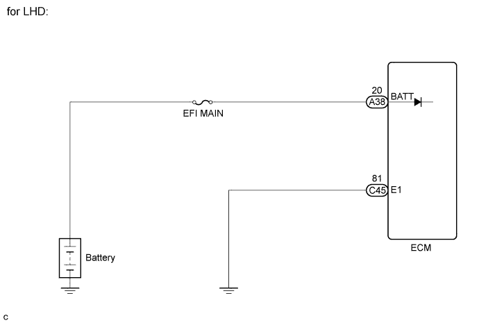
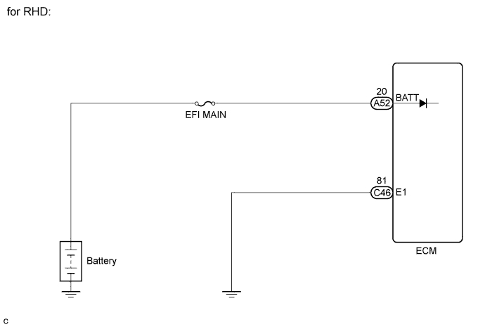
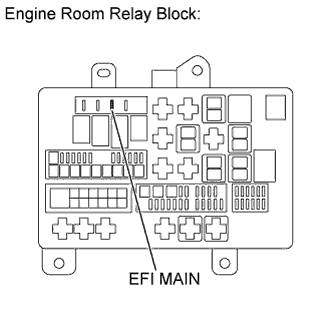
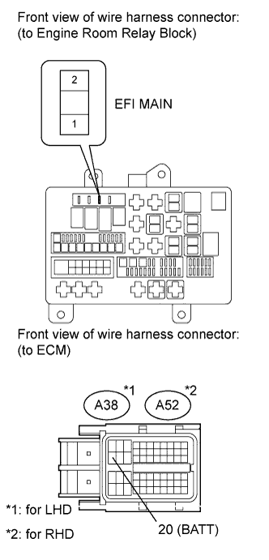

DTC P0560 System Voltage |
| DTC Code | DTC Detection Condition | Trouble Area |
| P0560 | An open in the ECM back up power source circuit (1 trip detection logic). |
|


| 1.INSPECT FUSE (EFI MAIN) |
 |
Remove the EFI MAIN fuse from the engine room relay block.
Measure the resistance according to the value(s) in the table below.
| Tester Connection | Condition | Specified Condition |
| EFI MAIN Fuse | Always | Below 1 Ω |
|
| ||||
| OK | |
| 2.CHECK HARNESS AND CONNECTOR (ECM - EFI MAIN FUSE, EFI MAIN FUSE - BATTERY) |
 |
Check the harness and the connector between the EFI MAIN fuse and ECM.
Remove the EFI MAIN fuse from the engine room relay block.
Disconnect the ECM connector.
Measure the resistance according to the value(s) in the table below.
| Tester Connection | Condition | Specified Condition |
| EFI MAIN fuse (2) - A38-20 (BATT) | Always | Below 1 Ω |
| Tester Connection | Condition | Specified Condition |
| EFI MAIN fuse (2) - A52-20 (BATT) | Always | Below 1 Ω |
| Tester Connection | Condition | Specified Condition |
| EFI MAIN fuse (2) or A38-20 (BATT) - Body ground | Always | 10 kΩ or higher |
| Tester Connection | Condition | Specified Condition |
| EFI MAIN fuse (2) or A52-20 (BATT) - Body ground | Always | 10 kΩ or higher |
Check the harness and the connector between the EFI MAIN fuse and battery.
Remove the EFI MAIN fuse from the engine room relay block.
Disconnect the cable from the positive (+) battery terminal.
Measure the resistance according to the value(s) in the table below.
| Tester Connection | Condition | Specified Condition |
| Battery positive terminal - EFI MAIN fuse (1) | Always | Below 1 Ω |
| Tester Connection | Condition | Specified Condition |
| Battery positive terminal or EFI MAIN fuse (1) - Body ground | Always | 10 kΩ or higher |
|
| ||||
| OK | |
| 3.INSPECT BATTERY |
Check that the battery is not depleted.
|
| ||||
| OK | |
| 4.CHECK BATTERY TERMINAL |
Check that the battery terminals are not loose or corroded.
|
| ||||
| OK | |
| 5.CHECK WHETHER DTC OUTPUT RECURS |
Connect the intelligent tester to the DLC3.
Turn the engine switch on (IG) and turn the tester on.
Clear the DTCs (Click here).
Turn the engine switch off and turn the tester off.
Start the engine and turn the tester on.
Enter the following menus: Powertrain / Engine and ECT / DTC.
Read the DTCs.
| Result | Proceed to |
| P0560 | A |
| No output | B |
|
| ||||
| A | ||
| ||